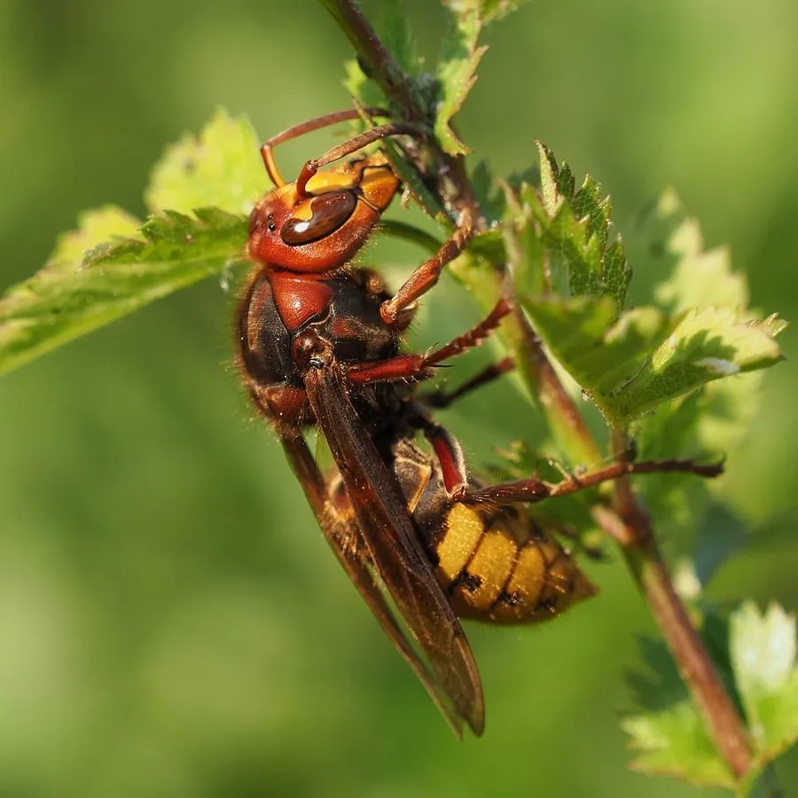

昆虫 · 动物界
黄纹大胡蜂 Vespa crabro

欧洲体型最大的胡蜂，腹部黄底黑纹，多在树洞与墙缝中筑巢，夜间有趋光性，蜇刺强烈且可多次蜇人。
- 分类
- 门节肢动物门纲昆虫纲目膜翅目科胡蜂科属胡蜂属
- 栖息环境
- 阔叶林、果园、公园和村落，巢筑于树洞、墙缝或屋檐下
- 地理分布
- 欧洲、北非和亚洲温带地区，并已传入北美
- 保护级别
- 尚无保护级别；为体型最大的胡蜂之一，蜇刺风险较高
物种志
黄纹大胡蜂的体长约二点五至三点五厘米，蜂王可达四厘米，是欧洲体型最大的胡蜂。它的头部黄色，胸部红褐色至黑褐色，腹部黄底上有黑色的波状横纹，翅呈红褐色。上颚粗壮，能咬碎树皮刮取纤维筑巢，螫针光滑无倒钩，因此可以反复蜇刺，毒液量大。
它分布于欧洲、北非和亚洲温带地区，并随人类活动传入北美，栖息在阔叶林、果园、公园和村落，常在树洞、墙缝、屋檐下筑巢，巢材是咀嚼过的木纤维，呈褐色纸质。成虫捕食蛾类、蝇类和其他昆虫，也取食树液和熟果，夜间有趋光性，常飞入室内。它一年发生一代，以蜂王越冬。蜇刺会引起明显肿痛，靠近蜂巢或在夜间惊扰蜂群时被蜇的风险很高，过敏体质者可能出现严重反应，处理蜂巢应请专业人员。
形态与习性
- 体长工蜂约二点五至三点五厘米，蜂王可达四厘米
- 体色腹部黄底上有黑色波状横纹
- 螫针光滑无倒钩，可反复蜇刺
- 蜂巢筑于树洞、墙缝、屋檐下，褐色纸质
- 习性夜间有趋光性，常飞入室内
- 风险蜇刺肿痛明显，过敏体质可致严重反应
趣味知识
- 它的螫针没有倒钩，所以能一蜇再蜇，不像蜜蜂蜇完就死。
- 蜂巢藏在树洞或墙缝里，外面只看到进出的小孔。
- 夜里它会被灯光吸引飞进屋子，开窗时最好先关灯。